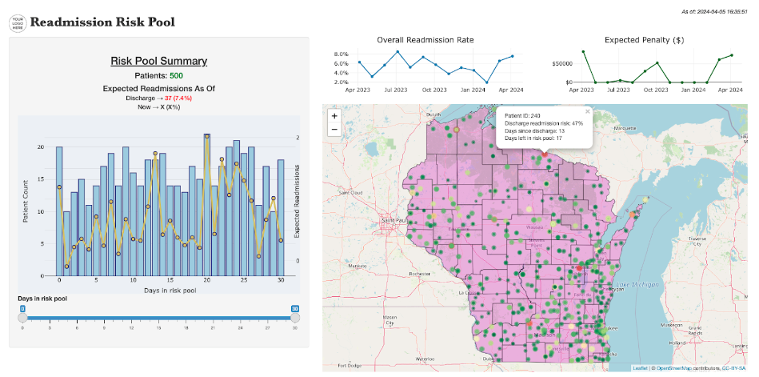
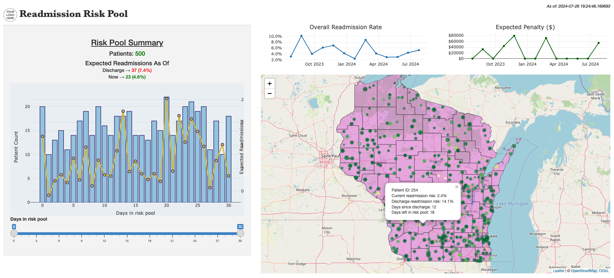

A prediction system for managing the hospital readmission risk pool
Each year hospitals across the United States get penalized by CMS, withholding up to 3% of all Medicare reimbursement for an entire fiscal year, for having excess readmissions. Additionally, there are implications from commercial payors, quality programs, etc. that make it a focal point of the general value-based care landscape. Not to mention the obvious patient burden (both financially and psychologically) of being hospitalized twice in a short period of time. Thus, it has become a key area of focus for hospitals in monitoring the overall health of their clinical and financial operations.
In turn, the day-to-day discussion becomes one of strategy: what interventions, processes, and workflows should be put in place to proactively prevent hospital readmissions from occurring? This is not totally straightforward. Do we focus on preventing the readmission, or the initial hospitalization altogether? You can’t have a readmission without an index stay. For which patients? Who needs which resources? There can be conflicting priorities. Hospitals depend on admissions (mostly from commercial payors) to keep the lights on. Also, programs like the Hospital Readmissions Reduction Program (HRRP) (CMS’ penalty program) only apply to Medicare beneficiaries, which is a subset of the overall hospital population (and sometimes the most unprofitable). Should we just put our resources towards preventing admissions for the unprofitable patients? Probably not. Obviously, we are constrained morally (and probably legally) from giving payor-based, preferential treatment, but this is simply the reality of the things stakeholders need to sift through. In my view, the best you can do to balance things, at least to start, is to be meticulously aware of what is happening–through data.
In this realm, one component of particular interest is using predictive analytics to anticipate and intervene on high-risk patients in order to prevent a subsequent hospitalization. Despite there being a large body of work by researchers developing creative and innovative approaches for preventing readmissions, the reality is that many hospitals do not leverage all the literature that is available because (a) most of it is just that–research, and it’s difficult to confidently translate and tailor that to an actionable program for any one hospital, and (b) it is simply too difficult to parse and organize because there is so much of it.
So, when hospitals do go down the route of implementing predictive tools for readmissions, it seems to be more readily available, yet sub-optimal modeling frameworks that are used. For example, Epic has their own readmission risk predictor native to its EHR platform for this very purpose. The common thing I notice about the tools used in practice (and in the way CMS does it) is the modeling setup: they predict the likelihood of readmission based on the state of the patient at the time of hospital discharge. Yet, it is well known, and frankly just common sense, that the actual drivers, the real, preventable reasons, for a readmission are circumstances of the patient after being discharged from the hospital. That’s not to say these scores aren’t correlated with the rates of readmission, or can’t provide a useful marker; but with the complexities of managing a diverse hospital population, it makes it difficult to figure out what to do with a rapidly stale risk score that only reflects how the patient was when they left the hospital, and ignores everything that happened after.
Thus, a reframing of the modeling problem is in order. And in fact, it’s more than that. In this effort, how the information is displayed, propagated and relayed between clinical teams and leadership is as (if not more) important than the shear goal of accurate risk estimation (according to statistical metrics). It requires cross-functional involvement (from the get-go), strategic design, attention to nuance and rigor, and a flexible scope in order to tie hospital-wide impact down to the individual patient.
This is my idea of how you might build a tool to effectively manage the readmission risk pool.
First, what is the readmission risk pool?
We’ll go with a very simple definition:
All patients at risk for hospital readmission at a given point in time.
Let’s use 30-day readmissions as an example. This would be all patients who were discharged from the hospital in the past 30 days who are still at risk for readmission. Meaning that up until the current point in time (i.e., now), they have not already been readmitted or had an otherwise exclusionary event. These are the patients we can still do something about.
From here on out, when we talk about the risk pool, this is what we mean. You can assume in general we’re talking about 30-day readmissions, although nothing about this framework necessarily restricts us to that.
Step 1: Build a (near) real-time data tool
This is simply a data problem.
Before we even begin the conversation about prediction, we should exhaust all efforts to optimize the ability to know what has already happened as close to now as we can. That means purposefully designing a tool that encapsulates the full picture of readmissions for the hospital (system), tying the contributions of individual patients back to aggregated hospital metrics, in (near) real-time. We can think of the types of questions that this would facilitate on-demand, up-to-date answers to, from different areas of hospital administration:
Care Management
- Who is currently in the risk pool?
- Has a patient already received, or is going to receive, a certain intervention?
- What are the patient’s socioeconomic conditions?
- Have they filled their prescriptions?
- What are the payor rules for the services they may need?
Coding/Billing
- Which patients contribute towards the HRRP and/or other relevant metrics?
- What is the readmission risk according to CMS’ (or other programs’) models?
- What risk factors from CMS (or other programs) are currently documented (and are there discrepancies)?
Executive/Leadership
- What is the current (estimated) HRRP penalty amount?
- What share of patients in the (past and present) risk pool affect readmission penalty?
- What is the real-time readmission rate, where has it been, and how will it change under various scenarios with the patients who may affect it?
The goal is to make it actionable for all stakeholders involved by giving them the most pertinent information they need when they need to know it. But doing so in a common, representative, well-connected tool so that the lineage is clear, and everyone is working from the same source of information. I strongly believe that putting in the cross-functional time, nuance, and rigor needed to design and implement tools like this, that mostly consists of figuring out how to move existing data points to a certain location at the right time, would relieve a lot of disconnect and probably give people most of what they need to make effective, informed decisions in a timely manner. Note that existing data points may include determining new ways to collect information as well, not necessarily only sticking with systems in place, as time may be better well-spent establishing new data collection mechanisms that actually measure the thing of interest, rather than jumping through hoops to force conformity of existing sources.
A prototype
So what might such a tool look like? Well here’s one possibility (the source code for this is here):

Not too fancy, but it’s a start. The focal point being the interactive map widget. Suppose your service area was the state of Wisconsin. Each dot represents a patient in the risk pool at their home address (i.e., they were recently discharged from the hospital), and the relative size/color of the dot represents the amount of risk. For example, in the popup box, Patient 240 was discharged 13 days ago with a 47% readmission risk, and has 17 days remaining in the risk pool.
It gives a simple and intuitive way to view the current risk pool for the hospital (system). Care managers can use it to identify patients for intervention in real-time, while leadership can use it to quickly get a pulse on the total volume of patients across the system at risk for readmission and how that would affect aggregated metrics over a period of time. Of course, there can be many enhancements to this for better utility, such as functionality to filter patients by disease categories, service lines, discharge location, PCP location (if they have one), whether they have a visit scheduled, payor, who will contribute to the HRRP (and who will not)…the list goes on. The goal is to have a readily-available, cohesive tool that can provide day-to-day actionable information for all parties involved.
Subsequent impact
The effect of this as a starting point is that the jump to predictive analytics becomes much more intentional. You get what you can from understanding what has already happened, which I think is a lot, and then proceed to a more advanced (i.e., predictive) solution that is much more well-defined once processes have been optimized with the current state and its capabilities have reached their limit. Then when you want to add that additional feature, the focus can be on that, making it much more clear for everyone who needs to be involved (e.g., IT, data analytics, clinicians, managers, etc.) what the specific goals are.
For example, if a care management team can already quickly and intuitively answer all the questions they have about an individual or group of patients with respect to things that already occurred in order to manage the risk pool on a day-to-day basis, then naturally the predictive piece only arises when the need is necessary (and predictably, it’s probably related to resource utilization). In a world with unlimited resources, they could just continually intervene on the entire risk pool everyday, until they know each patient is not going to be readmitted (and ideally after). But in our world, they’ll be faced with scenarios like:
- There are 500 patients in the risk pool, but I only have time to intervene on 50 of them. Which ones should I choose?
- Which patients are currently at the highest risk of being readmitted?
- Patient A was discharged 20 days ago, and patient B was discharged 10 days ago. Which one should I intervene on today?
At which point the necessary personnel can be convened, and an enhancement can be implemented for that specific purpose.
All-in-all, going back to the introduction, this is about being meticulously aware.
Step 2: What is going to happen?
Now suppose in the tool above, when we click on an individual patient, we want to know what their current risk of readmission is, given everything that has happened since they were discharged. Some patients may only have 5 days left in the risk pool, while others were just recently discharged. Some have had post-discharge clinic visits, some have not. Things have changed since they left the hospital, and we want to find a way to prioritize which ones still need our attention the most. This is where predictive analytics comes in.
Build the pipelines
From a technological perspective, we can first consider putting in a random number as a placeholder for the risk. This allows us to build the data pipelines, infrastructure and workflows needed to support the models once we’re ready for the real thing. Some key things to think about:
- Will it be delivered through an API?
- What databases need to be accessed, and when, in order to evaluate the models and produce a prediction?
- How will we monitor the model’s accuracy, and have the ability to iterate/update it?
- How will administrators and clinical teams interact with it?
- Where/how should the number(s) be displayed in the application?
Hashing these things out enables a plan to be put in place for the product as a whole, and ensures the buy in from all of the teams that will be needed to use and maintain it.
At this point, it’s still just a systems, logistical, and personnel problem. Once everyone understands how it’s going to work, then the focus (for the data science teams) can transition to the math.
The model
We’re going to get a little technical here.
Let
\[D = \text{Readmission duration of interest (e.g., 30 days)}\] \[T = \text{Time since discharge to the current time point}\] \[R = \text{Time that the patient is readmitted (if at all)}\]
Then what we want to estimate is:
\[P(R \leq D | R > T)\] In layman’s terms, were simply asking this: if, as of now, a patient is still at risk for readmission (i.e., in the risk pool), what is the probability that they will be readmitted in the remaining window of interest, given they have not been readmitted up to this point?
So if a patient was discharged 20 days ago, and they still have not been readmitted, we want to know how likely it is that they will be readmitted in the next 10 days (assuming we care about 30 day readmissions), given what has happened since discharge.
How do we estimate it?
Notice that the model is actually quite general, which leaves the door open to many possible ways to structure the data and choose statistical methodologies as seen fit. We’re basically needing some modeling process, however defined, that can produce a predicted probability at an arbitrary point in time, accounting for what has happened up to that point. Intuitively, I think some sort of Bayesian approach would be pretty cool, since you can conceptually think of updating yesterday’s risk with the new information you’ve gathered about the patient up to today (e.g., maybe they just completed an office visit). In that sense the information is more naturally accumulating. But since I haven’t thought that one through yet, I’ll propose a simpler way to start:
1. Start with the baseline risk
We’re not trying to totally recreate the wheel here. Those discharge-based risk estimates we talked about in the introduction can still be valuable at that point in time. Since they already account for many patient/clinical characteristics before and during the hospitalization, we might as well use it. Additionally, if a hospital (system) is already using, say, an Epic readmission risk score, this can just be seen as a day-to-day updating of that. However, if you don’t have/want this, this framework will still work.
We just want an estimate of the patient’s risk of readmission when they leave the hospital, however that may be generated. If you want to pretend you know nothing at that time, then just think of starting everyone at the overall average risk.
2. Define the denominators
Let’s assume we’ll generate one prediction per day for each patient over the course of the 30-days after they are discharged. So, we’re going to train separate models for each of those days: 1, 2, …, 30. Thus, we need to define the set of patients who were in the risk pool at each of those points in time over whatever period our training data will cover. For example, for the Day 5 model, our denominator will consist of patients who were readmitted after 5 days from discharge or were not readmitted at all. For the Day 20 model, patients could not have been readmitted before 20 days post-discharge. And so on. So, these denominators get smaller and smaller for increasing time points.
3. Define the numerators
Analogously, we need to indicate whether the patient was in fact readmitted or not. For the Day 5 denominator, we want to indicate if they were readmitted in the following 25 days. For the Day 20 denominator, we want to indicate if they were readmitted in the following 10 days.
Choosing an outcome distribution
As defined, the numerator sets us up for a binary classification model, like logistic regression, or other more complex machine learning (ML) algorithms. However, we may alternatively think of keeping track of the actual number of days until the readmission, which conforms more to a time-to-event model, like Cox-proportional hazards (or an ML equivalent). In the latter case, we could choose to censor patients at the \(D-T\) time point (e.g., 30 days), or a later time point.
The thing I like about the time-to-event setup is that it allows us to more easily estimate risks for any future time points, like 60 days or 90 days, and doesn’t try to equate a patient who was readmitted at 31 days with a patient who was not readmitted at all, as a binary outcome would. We know practically that these patients are not the same.
4. Append the predictors
Now the fun part. At a given point in time, what do we think are the main indicators/events that occur during follow-up that will impact the risk that a patient will ultimately be readmitted? Here I’m mostly focused on interventions, assuming most of the demographics and clinical history is already accounted for in the baseline risk (and we can actually use this risk as a predictor in all of the models too). This might include things like:
- Did they complete a follow-up visit?
- Do they have a visit scheduled?
- Did they fill their prescription?
- Do they have transportation means?
- …the list goes on…
We need to define these at time point \(T\) for each model. Now this list might vary by time point (e.g., if the things impacting readmission risk at Day 1 are different than those at Day 25), by disease (e.g., readmission risk factors for a post-surgical patient are presumably different than a COPD patient), or a host of other things. We might have different models by these different subgroups, so all of these nuances should be discussed as a preparatory step to modeling.
5. Calibrate to baseline risk
We can think of what we’re constructing as a risk trajectory over follow-up, so if we’re using an already-established baseline risk score at discharge, then each of our subsequent predictions can just be transformed to be relative to that, making a smooth transition from discharge through follow-up.
Now, you can train the models. It would also be a good idea to concurrently setup a model monitoring mechanism, to be able to continually track and evaluate model performance over time, and perform ad-hoc analysis related to the effectiveness of the tool in its intent. Setting up this infrastructure in advance allows agility in the ability to iterate and update models as needed to ensure that they stay relevant.
An updated prototype
Now suppose we have built our models and integrated them into the tool above, such that each patient gets attached to them their current risk of readmission as of now (the source code for this is here).

For example, in the popup box, Patient 254 was discharged from the hospital 12 days ago with a readmission risk of 14.1%, and has 18 days left in the risk pool. However, we now see that this patient’s current risk of readmission has been reduced to 2.4%, presumably due to the various interventions and events that have taken place since then. Additionally, we can see that, as a group, we expected 37 (7.4%) patients to be readmitted once discharged, but now we only expect 23 (4.6%) to be, indicating that as a hospital (system) our interventions seem to be effectively reducing risk. But we do still have the ability to identify those individuals still currently at high risk, by finding the dots on the map that are largest and closer to red in gradient.
The aggregated expected readmission rate could be a useful metric for hospital leadership to keep a “global” pulse with, being able to see when an influx of readmissions may be coming, but is driven by the individual risk estimates that the front line care teams are working with, so it’s all tied together. The longitudinal look at these metrics would also be useful in the same vein for answering questions like, “How many readmissions are we expecting in the next week?”, which would allow you to promptly allocate extra resources to put out that fire in real-time. Analogously, we could add risk trajectories for individual patients, such that you can view how a patient’s risk has changed each day since discharge, to get a better feel for which interventions helped reduce it (or didn’t have any effect).
Now we have a tool in place to proactively identify high-risk patients in real-time that is optimally integrated into clinical/operational workflows. We also have a real-time pulse on the bigger picture, such as what the overall readmission rate is, how it is changing over time, the expected HRRP penalty amount, etc. Again, although there has been a significant improvement in the overall management of readmissions, these components may reach their limit of intended purpose, and people might start asking questions like: “We can accurately identify who is at highest risk, but what is the best intervention to use?” That’s where the last part comes in.
Step 3: What should we do about it?
If we’ve gotten to this point, there’s probably some good stuff happening, but we can always go further. Readmission reduction doesn’t necessarily have a one-size-fits-all solution, across different hospital systems or even patient populations within a hospital. Process improvement is a big component of how hospitals operate, and it would be beneficial to have the ability to customize and “try out” various interventions to see what does and doesn’t work and on which patients. Thus, we can use experimentation to rapidly test interventions to help inform what should done for an individual patient. Then, as this data is collected, can feed back into subsequent iterations of the predictive models to better quantify risk for individual patients.
For example, we may want to know whether a text or a phone call is more effective, or if we should auto-schedule follow-up appointments, or send transportation resources to be able to get patients’ prescriptions filled. In considering these things, we want to carefully design a robust infrastructure and data collection mechanisms to enable teams to rapidly test new ideas, but ensure it feeds seamlessly into the overall readmission management strategy, the central tool, and maintains statistical soundness.
Some considerations
It is important to identify the guiding measures that will objectively indicate if these efforts are paying off. Whether it’s just the overall readmission rate, the HRRP penalty amount, or a much more complex calculation of cost/benefit–allow that to guide development.
Having cross-functional involvement and buy in is essential. Someone can grab data from a database and build a model on their computer that is really accurate (statistically), but if it doesn’t fit into any clinical/operational workflow or doesn’t have the support it needs to work well in the system, does it really have value? Most of the success of a model in realizing real impact probably has little to do with the math, and mostly to do with the people and implementation.
Finding ways to leverage previously-established information can provide a head start. If another hospital has developed models that partially work for your patients, can we develop methods such that we augment that with what is needed for our purposes, instead of starting from scratch?